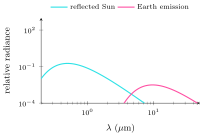

Example
By Wien's law:
Materials on the Earth absorb, reflect or transmit solar energy between about 0.4 and 3 µm. Reaching the Earth, the solar irradiance is diluted by the factor , so in the 3–5 µm region reflected sunlight and Earth emission are comparable; above 5 µm emission dominates.Picture

Sunlight reaching the ground versus Earth emission: they cross between 3 and 5 µm.
Intuition
By day, below 3 µm we see the Sun's light bounced off the ground; above 5 µm we see the ground's own warmth, day and night.
Pitfall
At night the reflective bands are blind, but thermal bands still work: night images are thermal or radar images.